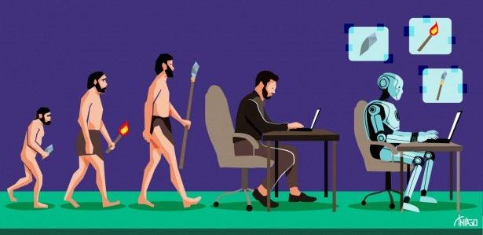
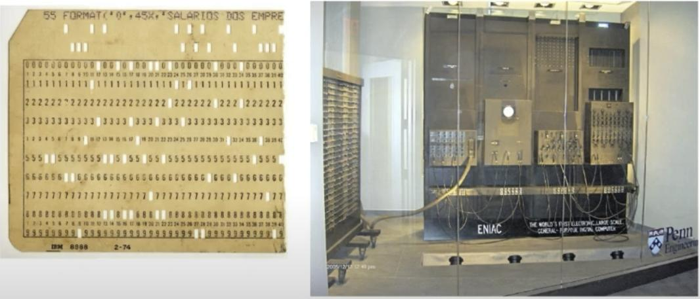
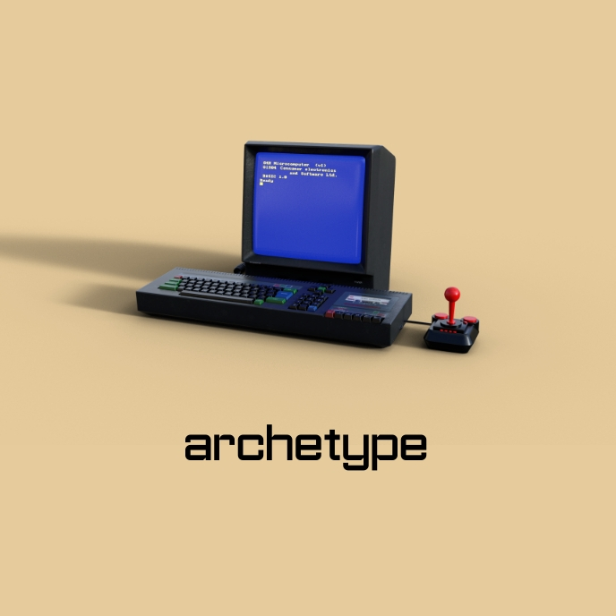
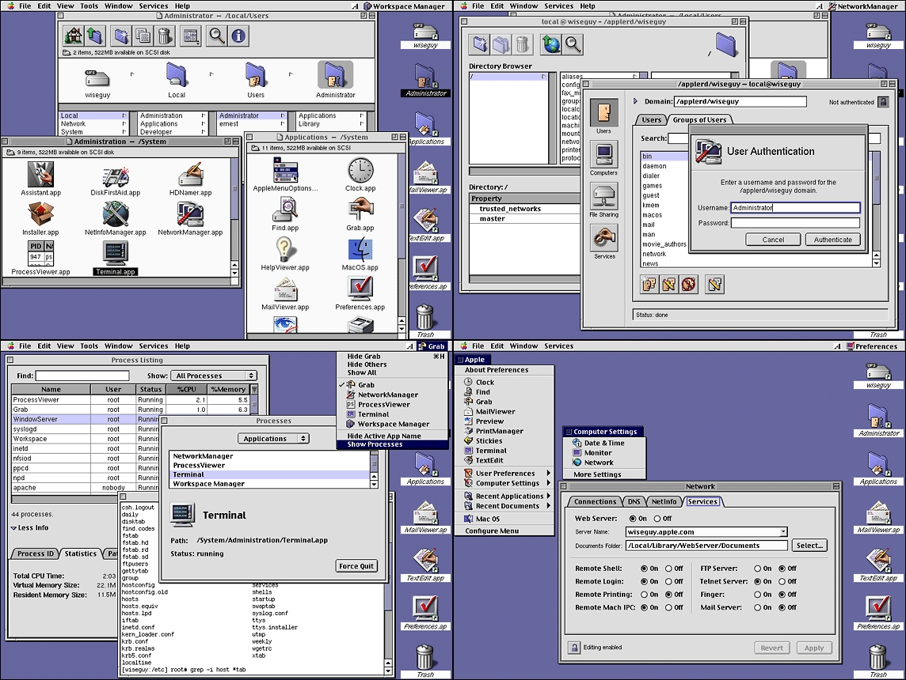
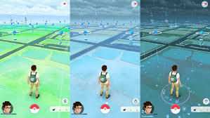

Disciplinas
INTERFACE HUMANO-COMPUTADOR-T01-2024-2 Concluído
Materiais
Vídeo 1 - Videoaula Obrigatória - Módulo 1 - Unidade 1 - Histórico e evolução de IHC sendprof.ª ministrante: Alessandra Alaniz Macedo (UNIVESP)
Conteúdo
INTERFACE HUMANO-COMPUTADOR (IHC)
HISTÓRICO DE IHC
HISTÓRIA.
Paradigmas de Interação x Evolução de Hardware
https://media.licdn.com/dms/image/sync/D4D27AQHMNJQ6ATAjug/articleshare-shrink_800/0/1720703910986?e=2147483647&v=beta&t=LgLW_ny_LR3F-ZQ69ksg8nhrLHJ7fi2oR2jch0Da2lI HISTÓRIA: BATCH.
- Uso de linguagem de máquina (001100111101)
- Computadores usados apenas nos centros de computação
- Os usuários eram especialistas e pioneiros
- Computador como uma máquina para cálculos programação, batch
 
HISTÓRIA: 1ª GERAÇÃO (HISTÓRICA)
- Interface de comando e consulta
- Comunicação puramente textual e impulsionada mediante comandos
- Respostas a consultas geradas pelo sistema
https://connectsantos.com.br/wp-content/uploads/2021/11/12154155448192.jpg HISTÓRIA: 2ª GERAÇÃO (TRADICIONAL)
- Menu simples
- Uma lista de opções
- A decisão apropriada é selecionada em código digitado
- Dá um contexto global
- Menos propenso a erros que o formato de linha de comando
- Uso pode ser tedioso
Escolha a opção de programa desejada:
1 = introduzir dados manualmente
2 = introduzir dados a partir de um arquivo de dados
3 = realizar análise simplificada
4 = realizar análise detalhada
5 = produzir saida tabular
6 = produzir saída gráfica
7 = outras classes de opção
Selecionar Opção?
https://d1csarkz8obe9u.cloudfront.net/posterpreviews/artistic-old-computer-album-art-design-template-d21a84e63af3e8126c35c959c612e1b0_screen.jpg?ts=1635261828 HISTÓRIA: 3ª GERAÇÃO (MODERNA)
- Interface "Point-Pick" - WIMP
- Diferentes tipos de informações podem ser exibidas juntas
- Janelas permitem mais de uma tarefa
- Uso de ícones gráficos
- Menus pulldown, botões e scrolling diminuem a digitação
https://i.ytimg.com/vi/cV9BtuPpW9w/hqdefault.jpg 
https://files.tecnoblog.net/wp-content/uploads/2022/08/mac-os-x-server-1.jpg HISTÓRICO – 4ª GERAÇÃO
- Interface hipertexto e multitarefa
- Combina todos os atributos das interfaces "Point and Pick" com
- A capacidade de executar uma série de diferentes tarefas simultaneamente (a partir do ponto de vista do usuário)
https://cdn.pixabay.com/photo/2016/06/03/08/39/network-1432981_1280.jpg
- Realidade Virtual:
- Usuário é "transportado" para dentro da aplicação na qual realiza suas interações.
- Hardware mais poderoso, com luvas, óculos estereoscópicos, mouse 3D, capacetes, entre outros
https://gmedia.playstation.com/is/image/SIEPDC/psvr-product-thumbnail-01-en-14sep21

https://encrypted-tbn3.gstatic.com/images?q=tbn:ANd9GcRteE1Wp7B8--jNofKKnEdP1OxPrPHek83Bc3IMgSK6TLwoTBnb
- Interface touch:
- Informações digitais com formas físicas, podendo ser tocadas e manipuladas com as mãos
https://blogger.googleusercontent.com/img/b/R29vZ2xl/AVvXsEh8vJK8ZggMqdvVGzWzRnJMPgPjifjGvKhLEIaAgBSDn9HqPLRPjj039IjsntfFDozRq4Is25p2voGUML7-RS4B-7-rqeyaFSFdFRJIXPyo7OqnuBplYaxAK0HbkW1IauUh26Nj531-KKLI/s1600/touchscreen.jpg
- Computação vestível:
- Usuário vestindo seu gadget
https://t2.tudocdn.net/105536?w=1920
- Interface orgânica:
- E-Paper: monitor flexível
https://encrypted-tbn0.gstatic.com/images?q=tbn:ANd9GcTTA6j7ROUN6mV2sDPIIGfzq_U5Up5VOh_1WeEFugpujqwb8Umh